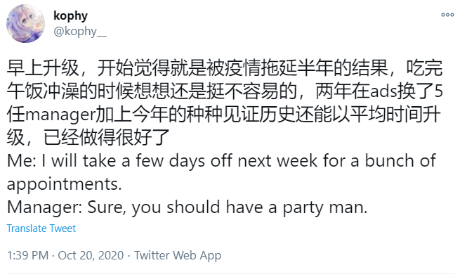
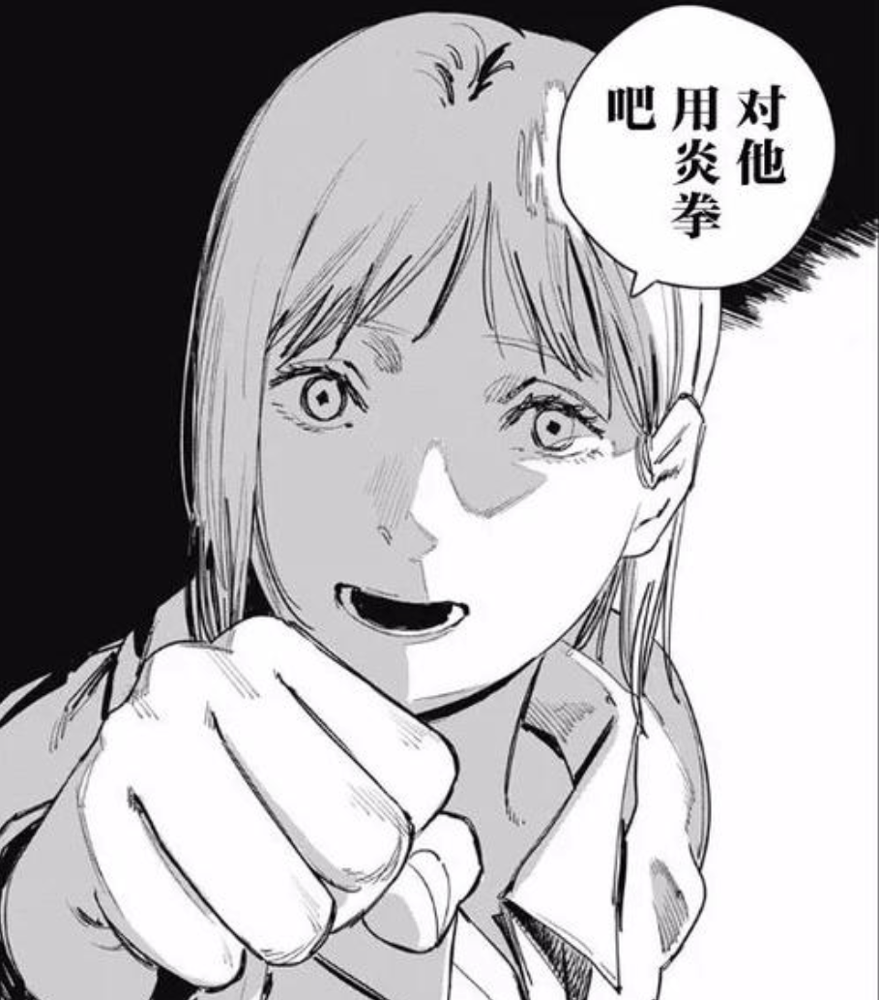
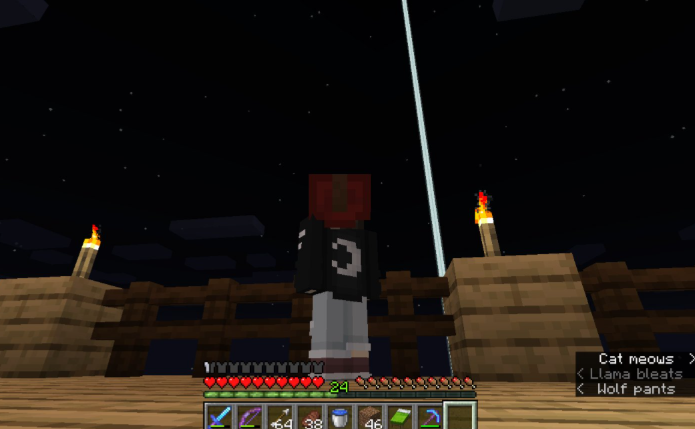

今年定了5篇博客的目标。其实最近工作原因搞Poisson Bootstrap，本打算认真写篇，考虑到要打大堆公式…还是轻松地写篇年度总结好了。
拿年度总结凑数就不太讲武德，毕竟总能写出点东西来。不过有什么关系呢，逃避可耻但有用啊。
背景
2020年用自媒体常说的，是「见证历史」的一年。直接影响北美程序员的包括年初开始的新冠，世界各地的封锁，美股多次熔断，中美互撤领馆，夏天的BLM游行，山火污染造成的橙色天空，翻来覆去的美国大选，年底H1B新工资限制；考虑更广地理范围和不那么直接影响的话，新闻简直数不过来——澳洲的大火，毛里求斯泄漏的原油，线上购物、电动车、航空、影院行业的兴衰——虽然不至于一年时间全在见证历史，但新闻的密度也有些大。
从2月份开始Google要求work from home，最新计划是明年9月逐步回office（考虑到疫苗的质量和产能，推迟的可能性比较大）。简单地讲，除去日常的散步、购物、自我放飞外，我在家过了一年看窗外的树比看人脸时间多的生活。
职业发展
工作
延续2018年，我依然在Ads Measurement组，两年来组里有新产品也换了不少人。经历概括起来大概是「我没秃，但也变强了」——明面上的体现是9月份perf终于promo到L4。2月份时manager认为我的promo packet足够强了，无奈Google把进行了一半的perf取消了，取消了…2年来换了5任manager，大大小小做了近10个项目刷出了C++和Go的readability；比不上能力与运气结合、一年多就能promo的人（隔壁组就有），不过人也只能期望「结中等缘」。

两年来通过“提升设计与实现能力$\leftrightarrow$扩大scope”的正反馈循环，现在基本独自在做一整个expected revenue在几百million的新产品，具体工作上infrastructure，cloud，model自然都要做，但也有更高层次的各种planning（产品定义、安全、资源使用）以及非全局建筑者不会涉及的工作，算是可以自封TL的状态（毕竟Google也没有正式的TL职位）。直接工作之外，多少也带着「回馈」的心态参加interview，主持fix-it，加入readability reviewer，明年夏天应该也会带intern。
专业学习
今年花了不少时间在「架构」上——有必要解释一下逻辑——最初是出于兴趣读paper看积木如何组合；而后觉得不会做纯粹的infrastructure，那么实践这些屠龙术的最好平台是云，不如去考几个证书；年底有Amazon HR找去面试，才看了些正经的system design面试资料。
读想看的paper很开心，不管是得到问题的答案还是抬杠对方，所以今年指标是超额完成的（也刻意选了不至于burnout的指标）。读paper过程的一点体会：
- 阅读不是线性过程。可以「一周内读掉一篇paper」，但不要强求「一小时内看懂这几页」，有时需要背景知识，有时需要时间思考，有时甚至paper本身埋坑。
- 不动笔墨不读书。感兴趣可以看看我的笔记，但我只写认为重要或者有趣的东西（有些paper完全没记），所以还是建议读原文。
证书的事情在之前的博客里提过。工作中主用GCP，打算接触一下市场份额大得多的AWS，所以去考了AWS Solution Architect。证书有多少含金量另说，但熟悉AWS的S3/EC2/ELB/Dynamo/...那套名词在面试中很好用。
system design面试资料不太有意思，毕竟只是一些理想情况下的方案，但去Amazon面试还是很有意思的，因为工作原因（Amazon在广告领域是game changer）和考了证书的关系，去面试有点「圣地巡礼」的意思，而且复盘想来Amazon大约崇尚水桶式加点，也是一种职业规划思路。
生活
家人
我不知道该怎么讨论这个问题，外公在年初去世了（不是新冠，是带状疱疹快痊愈时的意外）。
开始时我不觉得很难过，还在安慰家里，直到夏天发现几道黄瓜炒肉片之类的家常菜我和外公做得一样。
投资
坦诚讲我今年收益相对不算好——目前是80K本金，13%的收益（重仓EV的人无论眼光或者魄力，都是well deserved）。重要原因是年初熔断把钱取走后就完全把这件事情忘了（扶额），直到8-9月份才开始逐步加仓和积极操作。
这方面没有太多可总结的。最重要的体会是给风险而不是给自己设限，比如「我是保守投资者，所以只投会持几年的股票」。
阅读
今年零零散散读了十几本书——当然绝大部分都不是那么正经的，比如爱手艺系列甚至包括《无限之住人》的几本漫画（我就是把漫画也算成书），正经的书有技术有投资有其他乱七八糟的领域。
- 爱手艺系列：毕竟时代隔得太久+各种文化中接触过，爱手艺系列并没有预期中不可名状…文明三部曲都很经典，特别是被抄袭成电影普罗米修斯的《疯狂山脉》，读来最疯狂的是《星之彩》。
- 海兽之子：海の幽霊听了太多遍就想看原作，读到最终卷诞生祭都觉得晦涩——看分析才明白是在科普一种地球生命产生的假说。五十岚大介对海洋生物的描绘是真的细致，而且安吉拉在水下看到旋齿鲨那幕，配上空「有非常古老的生命来了」，只能说震撼。
- 无限之住人：如果先看这本后看只狼，看着血仙虫$\rightarrow$附虫者，「他人的手就不能用吗」$\rightarrow$忍义手之类的设定大概会「宫崎老贼跌落神坛.jpg」故事算上暗线也不复杂，主要是各种奇门冷兵器的打斗。
- 藤本树系列：包括《电锯人》、《炎拳》和各种短篇，地上第二自由的漫画家名副其实，今年重要的快乐之源，什么都不说是最好的。

下半年才发现国区Amazon有个包月计划，一个月12人民币，实现了连白菜价都不用的读书。
游戏
游戏方面有必要分成实际打过和看解说的游戏。自己花时间最长（100小时以上）的游戏有三个：
- Minecraft：去年年底受VTuber影响开始玩，今年主要是囤积资源以及打掉了凋灵和末影龙。这游戏还是挺吃心态的，凋灵需要3个凋灵骷髅头召唤，每个凋灵骷髅用掠夺III也只有5.5%的掉落率，可以估计下我在下界要塞落命多少次（
- 动物森友会：上半年热度不用说的还贷模拟器（为此买了switch），没有玩下去的主要原因是做完主线后失去动力+不能批量生产缺乏耐心了。
- Tetris：同样是受VTuber影响开始玩，现在算是常驻前20的水平？不过解锁vip后主要是和机器对战了，比起赢我还是觉得试验各种T旋和perfect clear更有意思。

云通关的游戏很多，Nier: Automata，恶魔之魂，甚至把太吾绘卷又拿出来看了一遍。 不过印象最深的是夏天看岚少深夜廻的解说；到结局时，可能是给了自身的负面感情一个发泄口，是一年里最接近哭了的一次。
剧透注意，谨慎展开
故事简单地讲，夏末晚上小唯和小遥去看烟花，结束后两人失散，小遥于是带着小唯的狗、拿着手电筒在深夜妖魔鬼怪横行的街道寻找小唯。
像是大冒险一样走过洋馆、水坝、山洞，但找到的小唯已经被山神蛊惑而死去，变成了类似怨灵的存在。
最后小遥向负责断缘的缘天尊喊出「もういやだ」，缘天尊切断了小遥的左手，也切断了连接两人的、「缘」的红线。
和前作用眼睛换回姐姐不同，为什么经历漫长的旅途克服那么多困难，失去左手，还是不能换回朋友呢？寻找朋友反而落得连「缘」也失去。
……
之前看角巻わため实况的剪辑，那句「为什么别人理所当然拥有的东西，我没有呢？」闻者落泪。
想到最后只能承认，很多事情是没有理由的。
Misc
- 今年不太想看番，只看了ID: Invaded，咒术回战和全员恶玉（无能力者娜娜也是一半就弃了，虽然漫画有看），也评不出排名。
- 上半年经常在B站看Hololive剪辑，后面发生的事情不评论，之后没有剪辑完整的视频太长就没怎么看了，虽然SC照打（单推人）。
- 做了B超等各种各样的体检，要多注意健康。
- 换了电脑（Macbook Air$\rightarrow$Thinkbook）和手机（小米$\rightarrow$Iphone）。
- 在阳台种了柠檬和薄荷，这两种植物我的评价是robust，原因任君想象:)
- 夏天高温+空气污染的时候白嫖公司的钱买了移动空调和空气净化器，总共使用时间…几天。
- 身心状态最差的时候吃褪黑素见光醒反而状态更差，两周后终于悟出了眼罩才是一切的答案。
- 想买哑铃时10和12磅的都卖光了，于是买了15磅的，用多了也习惯了。
总结
要给今年的经历选关键词的话，脑子里却尽是些负面的词语。那些失去的——有形或无形，自身或他人——总是比得到的印象深刻。
我不知道失去的东西会不会以另一种形式回来，但塔勒布说没人在极端斯坦承受完全的失败，种下的柠檬种子1枚还在成长，打破了一些给自己设定的界限，零零散散的东西汇集在一起，大概就是所谓希望。
写作过程中，也是2020年最后一周给我的一点意外：
- 做了半年的项目因为不可抗力黄了。
- 做梦梦到了外公。
- 写完发现utterance崩了（以后再修吧）。
- 我能用平静的、仿佛谈笑的轻松心态接受一切。
新年规划
新年有些规划不会用kophy/本人的身份做，有些要试验一下才知道是否可行，但是确定要做的：
- 保持阅读的习惯，尝试读书笔记等最基本的输出。
- 继续探索潜意识中，给自己和世界设定的界限，接受或拒绝它们——「不是作为天真易受伤的少年，而是自立的专业人士」。
- 多花一些时间在家人和朋友身上。
2021不会魔术般变好，只希望能在山重水复、柳暗花明中得到一些自己想要的。祝读这篇文章的你新年快乐！